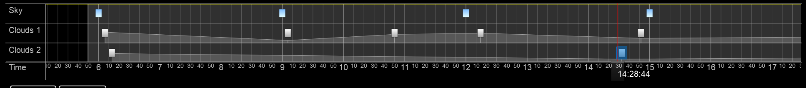
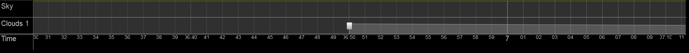
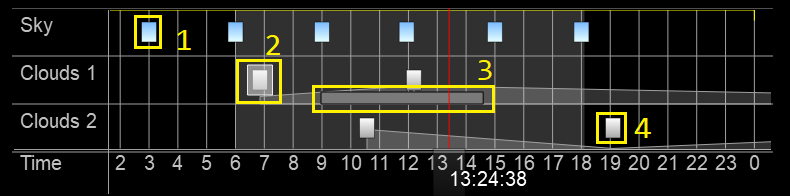
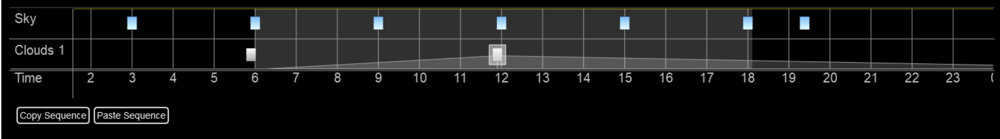
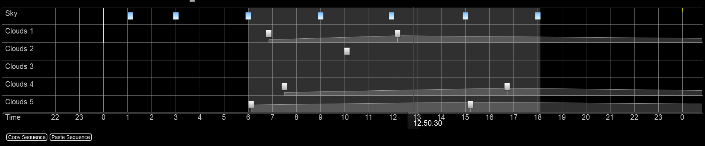
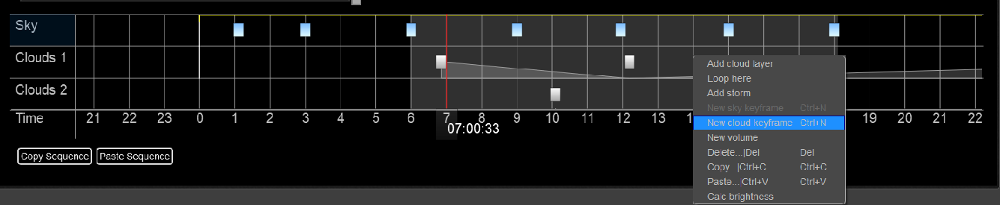

Timeline¶
The Timeline is the where all your keyframes are stored. It is used to adjust which features appear at what time.
The numbers along the bottom represent the time. Within the timeline, trueSKY shows the time in hours and minutes. Zooming in and out with the mouse wheel will adjust the range of visible time. To change the current time, drag the red vertical line (the time marker) by its handle underneath. To change the visible time-window, drag the timeline at the bottom. To adjust the range of visible time, use the mouse wheel to zoom in and out. To adjust the current time in the timeline, you can drag horizontally by holding right click.
You can select multiple keyframes at once by either shift clicking them individually, or you can double click within the desired layer to select all keyframes in that layer. You can then alter all their properties at once. Keyframes can be dragged and moved along the timeline with left click or copied and pasted in multiple places.
If there is only one cloud keyframe present in a layer, then the clouds will not change over time, only move (if there is wind in the scene). If another keyframe is added to the layer, then the clouds will interpolate between the different keyframes based on the current time in the world. Interpolation is applied by layer, so clouds in layer 2 will not change based on clouds in layer 1. While interpolating, a special keyframe is created that stores the information. You can obtain a reference to this using link simul::clouds::CloudKeyframer#GetInterpolatedKeyframe endlink.
To learn more about progressing time within the world, along with the multiple ways to do so, head to Progressing Time.
Keyframes¶
Keyframes are what store the information about different cloud formations or skylines. There are 3 types of keyframes: Sky, cloud and storm. Each keyframe holds information on their respective effect, and can be customised in real time. You can edit the details for each individual Keyframe.
Number |
Description |
|---|---|
1 |
This is a Sky Keyframe, these are Blue. Sky keyframes determine the colours of the sky from horizon to zenith, any haze/fog effect, and light colour. |
2 |
This is a Cloud Keyframe, these are white. You can see it is the currently selected keyframe because of the translucent box around it. |
3 |
This is a Storm Keyframe, these are Grey and their size depicts their duration. Storms produce lightning at set intervals for the duration of the keyframe. |
4 |
This is a currently unselected cloud keyframe. Cloud keyframes determine the properties of the clouds at the given time. |
Layers¶
There are two types of layers in trueSKY: Sky and clouds. Layers store their respective keyframes, and each layer has settings that affect all the keyframes within.
Although there are only 2 types of layers, you can have numerous clouds layers. There can only be one Sky layer, as there can only be one Sky. Allowing for multiple cloud layers allows different cloud formations to appear at the same time. To add a cloud layer, right click anywhere in the timeline, and select “Add cloud layer”. You can add as many cloud layers as needed, but the recommended limit is 5. Performance cost per layer is minimal.
Layers do not have any effect on the height of the clouds. Layer 1 can be lower than layer 2, or layer 5 could be in the middle. Height settings are adjusted within the individual keyframes. To add a keyframe to a layer, simply right click within the layer you want the keyframe for (click in the sky layer for a sky keyframe, cloud layer for cloud keyframe), then select the “Add Cloud Keyframe” option.
You can click on the layer name to access layer specific settings.